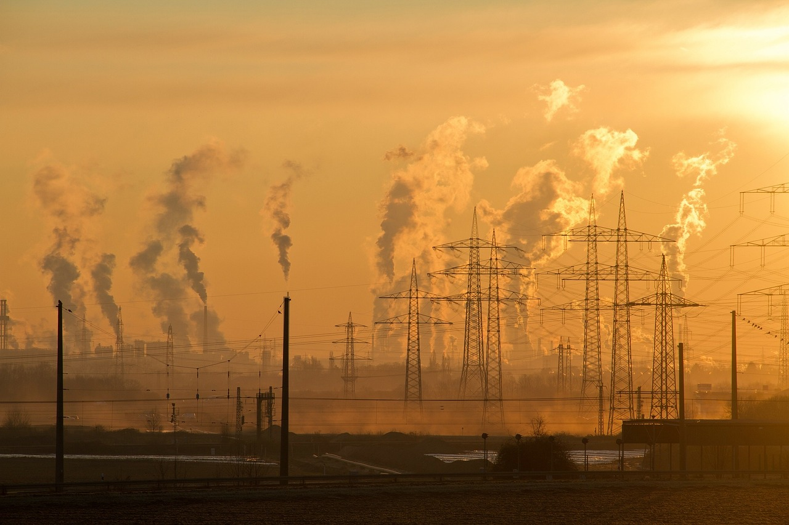

Mi a levegőszennyezés?
A levegőszennyezés a környezetszennyezés egyik formája. A légszennyezés napjaink egyik legjelentősebb problémája, amely komoly hatással van az emberi egészségre és a bolygó ökoszisztémáira. A levegőbe jutó káros anyagok, mint például a szén-dioxid, nitrogén-oxidok és finom szemcsés anyagok, különböző forrásokból származnak, beleértve az ipari kibocsátásokat, közlekedési eszközöket és mezőgazdasági tevékenységeket. Ezek az anyagok nemcsak a légkör összetételét változtatják meg, hanem hozzájárulnak a globális felmelegedéshez is.
Hatása az egészségünkre
Az egészségügyi hatások közül a légszennyezés leggyakoribb következményei a légzőszervi megbetegedések, mint például az asztma és a krónikus obstruktív tüdőbetegség. A szennyezett levegő hosszú távú belélegzése szív- és érrendszeri problémákhoz is vezethet, és növelheti a korai halálozás kockázatát. Különösen veszélyeztetettek a gyermekek, idősek és azok, akik már meglévő egészségügyi problémákkal küzdenek.

Hatása a környezetre
A légszennyezés nemcsak az emberi egészségre, hanem a természetes környezetre is káros hatással van. A savas eső, amely a légkörben lévő szennyező anyagokból alakul ki, károsíthatja a talajt, a növényeket és a vízi élőlényeket. Ezenkívül a légszennyezés csökkentheti a növények fotoszintetikus képességét, ami hatással van az élelmiszer-termelésre és a biodiverzitásra.

Mit tehet az emberiség?
A probléma megoldása érdekében globális és helyi szinten is szükség van hatékony intézkedésekre. Ezek közé tartozik a tisztább energiaforrások használata, a közlekedési rendszerek fejlesztése és az ipari kibocsátások csökkentése. Emellett fontos a lakosság tájékoztatása és oktatása, hogy mindenki megértse a légszennyezés hatásait, és aktívan részt vegyen annak mérséklésében.